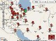
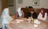
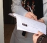
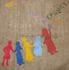
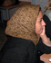

- 9 اسفند 1387
گفتگو با سیاوش خدایی از اعضای کمپین
گفتگو: نازلي فرخي / ياشار گرمستاني
- 19 آذر 1387
یک فنجان چای با روزنامه نگار فمینیست
حمیده نظامی
- 14 مهر 1387
گفتگو با مونا محمد زاده
نازلي فرخي-ياشار گرمستاني
- 12 شهریور 1387

میز گردی با کمیته شهرها
تنظیم : نسیم سرابندی/ عکس : راحله عسگری زاده
- 5 شهریور 1387

در آستانه دومین سالگرد کمپین
تنظیم:مریم زندی
- 25 مرداد 1387
گفتگو با اعضا
نازلي فرخي
- 29 تیر 1387
گفتگو با ستاره سجادي
نازلي فرخي
- 15 تیر 1387
گفتگو با مادر محبوبه کرمی
گفتگو: دلارام علی،مریم حسین خواه
- 6 تیر 1387
گفتگو با محبوبه كرمي
مریم مالک، راحله حسینی
- 13 اردیبهشت 1387
گفتگو ی شیرین مومنی با رضوان مقدم
- 4 اردیبهشت 1387
گفتگو: نوشین کشاورزنیا
- 9 آبان 1386
گفت و گو با حدیث جاودانی، از اعضای کمیته داوطلبان کمپین یک میلیون امضاء/ مریم مالک، جلوه جواهری
- 24 مرداد 1386

گفت و گو با فخری نامی، از اولین حامیان کمپین یک میلیون امضاء و عضو کمیته مادران/ مریم مالک
- 5 مرداد 1386

گفتگو:مریم حسین خواه
- 13 تیر 1386
مريم حسين خواه
- 18 اردیبهشت 1386
- 2 اردیبهشت 1386

گفتگو با مریم بهرمان ، از فعالان شیرازی کمپین:
مریم حسین خواه
- 7 فروردین 1386
گزارشی از روند پیشرفت کمپین در تبریز در گفتگو با فرانک فرید /مریم حسین خواه